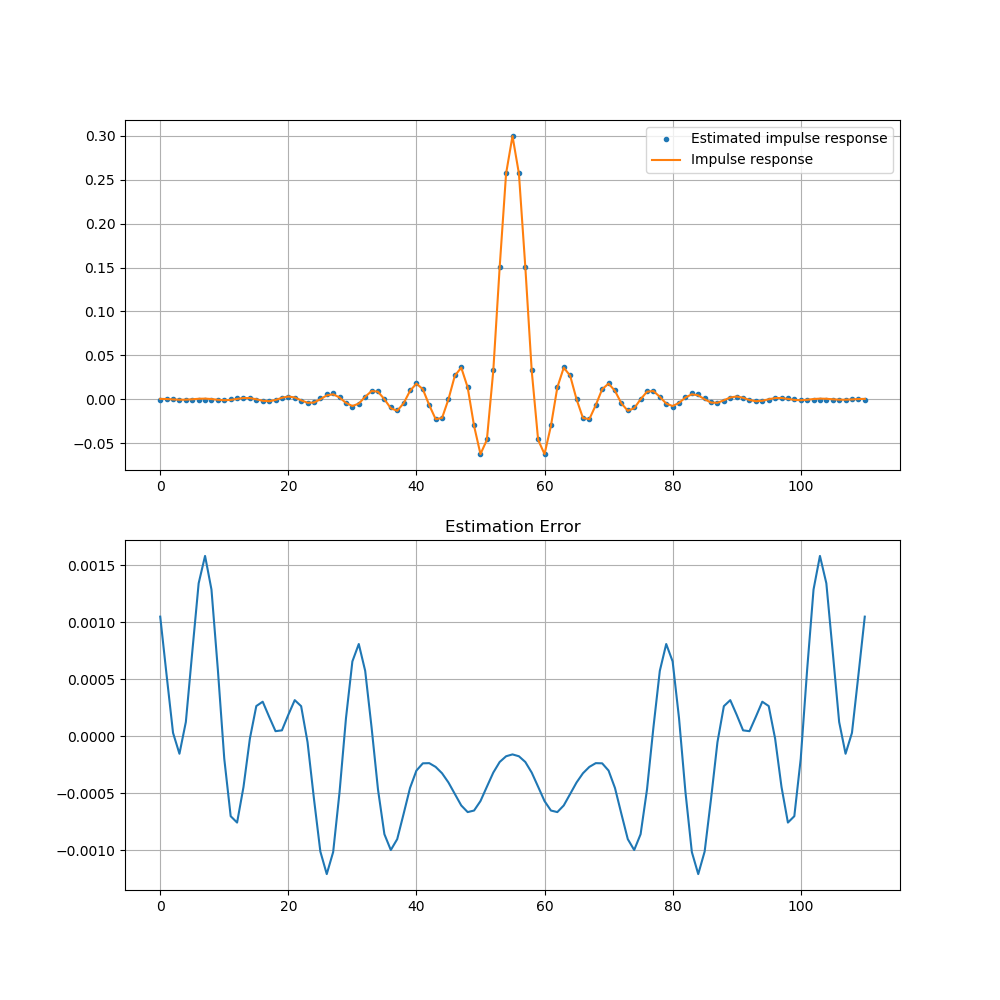

It is possible to estimate the impulse response of an LTI system using white gaussian noise. This can be done by using the similarity between the convolution sum and the cross correlation and the fact that the autocorrelation (\(p[k]\)) of an white gaussian noise is equal to \(\sigma^2 \cdot\delta[k]\).
Let's first remember some concepts:
- Cross Correlation
- Convolution Sum vs Cross Correlation
- Autocorrelation of white gaussian noise
Cross Correlation
Wikipedia: In signal processing, cross-correlation is a measure of similarity of two series as a function of the displacement of one relative to the other. This is also known as a sliding dot product or sliding inner-product.
We can estimate the cross correlation between two sequences using the equation bellow:
Convolution Sum vs Cross Correlation
For a filter with impulse response \(h[n]\), the output \(y[n]\) of the filter for an input \(x[n]\) is given by:
For a filter with a response equal to \(h[-n]\) we have:
That is equal to the cross correlation between two sequences \(x[n]\) and \(h[n]\) scaled by K. Therefore, we can re-write the first equation the following way:
Autocorrelation of White Gaussian Noise
The autocorrelation \(p[k]\) of White Gaussian Noise \(w[n]\) is equal to its variance \(\sigma^2\) for \(k=0\) and \(0\) otherwise:
Estimating the impulse response of an LTI system
Now we are ready to estimate the impulse response. The process is described in the block diagram bellow:

In which \(w[n]\) is a white gaussian noise with mean 0 and variance \(\sigma^2\). We start by generating the impulse response we want to estimate and the white noise samples.
import numpy as np
import matplotlib.pyplot as plt
from scipy.signal import convolve
from scipy.signal import firwin
# This is the response we are trying to estimate
hn = firwin(numtaps=111,cutoff=0.3)
# generating noise with unitary variance and zero mean.
# The more noise samples we use, the better the estimation
noise = np.random.normal(0,1, 500000)
Note that:
# LTI system output to noise
lti_out = convolve(hn,noise)
and:
We know from the previous section that \(w[-n]*w[n]\) is equal to the autocorrelation of the white gaussian noise: \(K\cdot\sigma^2\cdot\delta[k]\). Therefore:
The generated noise has variance equal to 1, therefore
# we then estimate the correlation of the output to the input
est_resp = convolve(lti_out, noise[::-1])/noise.size
# remove the extra samples added by the convolution
est_resp = est_resp[noise.size-1:noise.size-1+hn.size]
We can compare the Estimated impulse response to the actual response using Signal to Noise Ratio
# Comparing the estimated response to the actual response using SNR
snr = 10*np.log10(np.var(hn)/np.var(est_resp-hn))
print(f'SNR (dB): {snr}')
SNR (dB): 37.69468555107308
x = plt.subplots(2,1,figsize=(10,10))
ax[0].plot(est_resp,'.',label='Estimated impulse response')
ax[0].plot(hn, label='Impulse response')
ax[0].grid()
ax[0].legend()
ax[1].plot(hn-est_resp)
ax[1].set_title('Estimation Error')
plt.grid()
